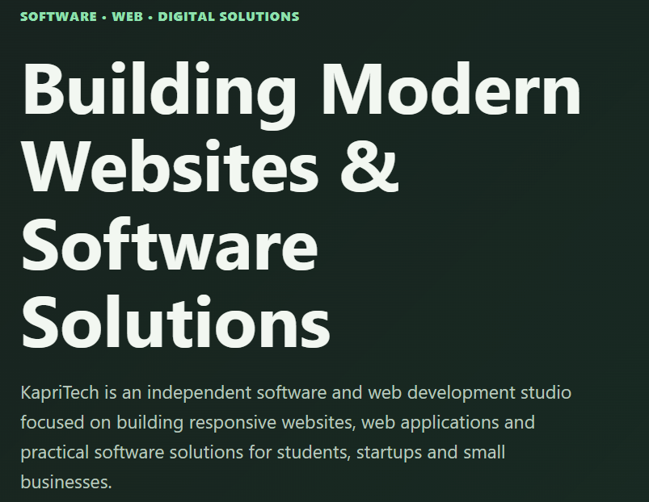

KapriTech Portfolio
The official company website – a showcase of our work, services, and the founder's journey. Built with HTML, CSS, and JavaScript.

About This Project
This portfolio website serves as the central hub for KapriTech. It features a dark/light theme, responsive design, project galleries, a services section, and a contact form. It's fully static and hosted on GitHub Pages.
HTML5
CSS3
JavaScript
Design & Features
🌓 Theme Toggle
Users can switch between light and dark modes, with preference saved in local storage.
📱 Fully Responsive
Optimised for all screen sizes, from mobile to desktop, with a mobile‑first approach.
⚡ Performance
Lightweight, fast-loading, and uses semantic HTML for accessibility and SEO.